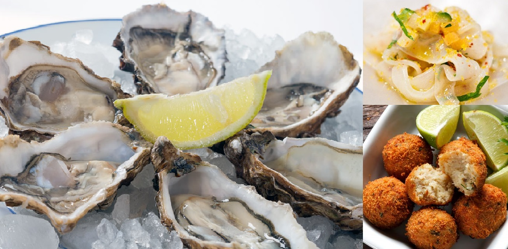
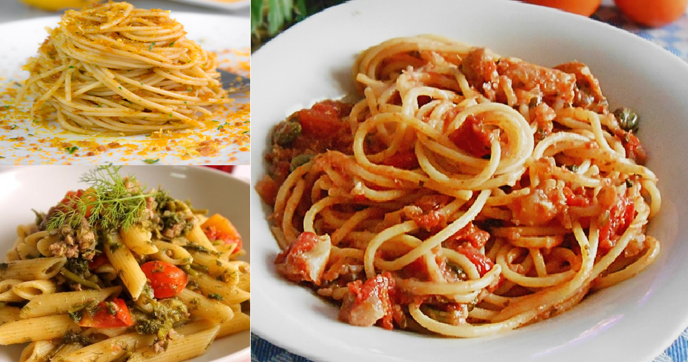
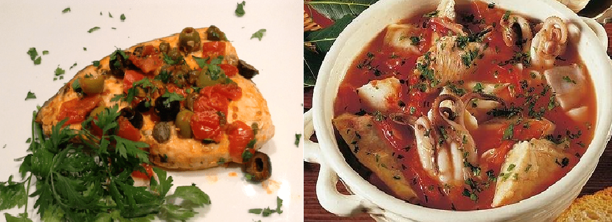

|
ANTIPASTI
Tagliatelle di seppiaCrudi Ostriche Gamberi sale e pepe
Caldi
Cozze al basilico: cozze, pomodori, basilico e peperoncino piccanteSarde ripiene: sarde, uova, pane, pecorino, prezzemolo, limone e pepe Polpette di baccalà : baccalà, pane, uova, farina, prezzemolo e pepe |
 |
|  |
PRIMI
Pasta al sugo di baccalà : linguine, baccalà, pomodori, pane e pepe neroPasta alla marinara : spagheti, pomodori, alici, peperoncino piccante e origano Pasta alla bottarga: spaghetti, bottarga di tonno, capperi e pepe nero Pasta con le sarde: bucatini, sarde, pomodori, cipolla e pepe nero Pasta, finocchio selvatico e alici: penne, alici, finocchio selvatico e pecorino Tubbetti, baccalà e broccoli di rape: pasta, broccoli di rape, baccalà, acciughe, cipollotti, origano e peperoncino Zuppa di cipolla e pane: cipolle, pane, peperoncini piccanti e strutto |
|
SECONDI
Alici alla maniera di San Lucido: alici, lardo e origano Alici piccanti al forno: alici, pomodori, pecorino e peperoncino piccante Alici scattiate: alici, pomodori, peperoncino piccante, origano e aceto bianco Baccalà alla maniera di Acri: baccalà, peperoni secchi e origano Pesce spada con olive e capperi: pesce spada, cipolla, pomodori, olive nere e capperi Tonno alla calabrese: tonno, pomodori, funghi, uova, cipolla e pepe nero Zuppa di pesce alla maniera di Crotone: pesce misto, alghe aromatiche, pomodori e conserva di peperoni |
 |

|
CONTORNI
Fave con salsa all'aceto: fave, pane, pecorino, menta e aceto Insalata di melanzane, patate e cipolle: melanzane, patate, cipolla, menta, aceto e pepe Melanzane con ricotta affumicata: melanzane, ricotta affumicata, pomodori, origano e pepe Zucchine alla scapece: zucchine, pane, menta, aceto e pepe |
|
DOLCI
Anime beateCannaricoli Dolce con fichi e nocciole Scalille |
|
|
VINI
San Vito di LuzziBivongi Melissa Greco di bianco |